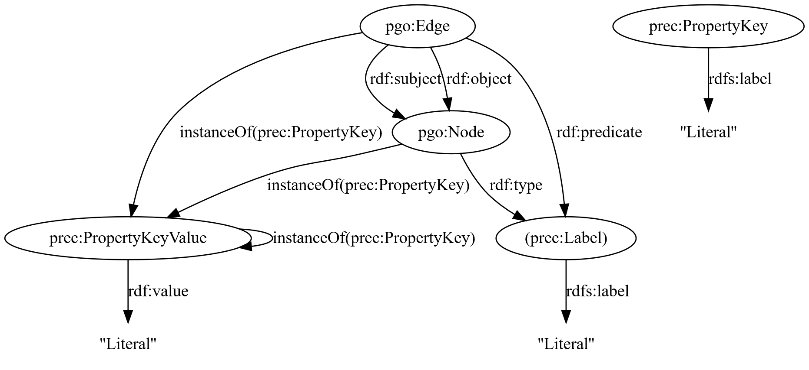

PREC is a library designed to enable interoperability between RDF graphs and property graphs.
This document mainly describes the PREC ontology: an ontology designed to describes the binding between the terms used in an RDF graph and the labels used in a property graph.
PREC is composed of three modules:
To convert a Property Graph (PG) into an RDF graph, PREC operates a two steps conversion:
To define the transformations to apply, PREC uses a Context provided by the user in Turtle-Star format.
The PREC-0 module comunicates with a PG engine using an already existing API, for example Cypher, Gremlin or APOC, and extract the data to build a PREC-0 RDF graph: an RDF graph that describes the Property Graph very literally.
The current schema of PREC-0 graphs is as follows:

A partial SHACL Shapes Graph is available at https://github.com/BruJu/PREC/blob/master/docs/prec0shape.ttl . This SHACL Shapes Graph should be conform on every PREC-0 generated graph (graphs extracted by PREC without any context).
The PREC ontology introduces some new types for the graphs generated by PREC-0. Note that the pgo:Node and the pgo:Edge types are used in the graphs generated by PREC-0.
Type of IRIs that has been created by PREC and that should be mapped to an actual ontology.
Types that are subtypes of [= prec:CreatedVocabulary =] are:
Type of property keys.
Type of property values. Can be seed as the counterpart of pgo:Property in the PREC-0 modelization.
A context is a document, written in Turtle-star, that describes how to convert the different nodes, edges and properties in the property graph into an idiomatic RDF graph.
The context can be automatically applied during the convertion of the Property Graph to RDF:
If you have already generated the PREC-0 graph, you can use the ApplyContext tool:
There are two different rulesets for contexts: PRSC and PREC-C. We recommand to use the PRSC ruleset if possible as it is easier to use.
Rules usually target some entities, and have some constraints on which entities it targets. Targettable entities, i.e. first class citizen, are:
PREC uses a custom templating system. Triples that should be produced by a rule are the ones described by embed triples used as the object of triples for which the predicate is prec:produces.
When the triples are produced, some terms, usually in the pvar namespace are replaced with terms depending on the data from the property graph.
Each triple that is used as an object of prec:produces is called a template triple. The set of all template triples of a resource, i.e. for a given resource, the set of all objects of triples that have as the subject the resource and as the predicate prec:produces, is named a template graph.
This templating system allows the user to write triples that are very close to the one that are produced. Moreover, because there are no variables, template graphs can be written in plain Turtle-star files.
PRSC contexts are contexts that transform all nodes and edges that share a common type by using a given RDF representation. A type is defined as whenever the element is an edge or a node, the list of labels and the list of properties of the element.
This kind of context identify every node and edges to a schema, and the transformation of every schema from PG to RDF must be defined.
The PRSC contexts that follow the given rules are said well-behaved:
You can check if a PRSC context is well-behaved with `npx ts-node prec prscCheckWellBehaved path-to-your-context`:
The characterization of a template triple can be considered as being equal to the triple where:
If an RDF graph is generated from a PRSC well behaved context:
Unlike PRSC contexts that only have rules for nodes and edges, PREC-C context ruleset can target node, edges and properties.
IRIs in the `prec` namespace are reserved for the ontology.
The default implementation reserves for itself the IRIs prefixed with `_` and `__`. Therefore, as they are reserved for implementation, using them in a context results in undefined behaviour.
By default, a triple is created for each node / edge /
property label / property blank node between its IRI / blank node
and the corresponding type.
If this flag is set to `false`, the triples in the form
`ex:node1 a pgo:Node` are deleted from the output graph.
[= PREC-0 =] generates an RDF Graph with a certain format. It is possible to change the way the properties and the edges are represented in the RDF graph.
By default:
[= PREC-Context =] is able to change the format used to represent the
properties and the edges by using templates.
In PREC, we call a template the format wanted by the user.
Predicate used to state that the components affected by the subject rule must be represented in the format described in the object.
[= PREC-Context =] uses a special IRI for the set of every edges and defines some base templates that are implcitely defined in every context.
Thanks to these IRIs and [= prec:templatedBy =], it is possible to tranform the representation used for every edge from the standard RDF Reification to any template.
[= prec:Edges =] is the domain of every edge. A template that is applied to this IRI will be applied to every edge.
`prec:Edges prec:templatedBy prec:RDFReification .`
Edges must be represented by using the standard RDF
Reification. This is the default behaviour.
`prec:Edges prec:templatedBy prec:RdfStarUnique .`
Edges are modeled as a triple that is added to th
graph, and meta properties are added using RDF-star. This
templatewill cause information loss if there are two edges with
the same label between two nodes.
`prec:Edges prec:templatedBy prec:RDFStarOccurrence .`
Edges are modeled as an RDF-star occurence: a blank
node represents the occurrence and [= prec:occurrenceOf =] is used
to link the node to the triple it is an occurence of.
This IRI is used in the generated graphs and should not be used in contexts as a "keyword".
Specifies for which triple the edge is an occurrenceOf. The semantics is identic to the one used in the latest RDF-star draft .
`prec:Edges prec:templatedBy prec:SingletonProperty .`
Edges must be represented by using singleton properties.
The template used for properties can also be redefined.
The domain of every properties. A triple that has [= prec:Properties =] as a subject is equivalent to three triples, one with [= prec:NodeProperties =] as the subject, another with [= prec:EdgeProperties =] as the subject and another with [= prec:MetaProperties =] as the subject.
The domain of every node properties. The properties on edges will not be affected by directives applied to this.
The domain of every edge properties. The properties on nodes will not be affected by directives applied to this.
The domain of every meta properties (properties on properties).
This is the default behaviour.
Properties are modeled without any blank node (`:node :propertyKey :thePropertyValueLiteral`), and the meta properties are represented by using RDF-star.
So far, this document described how to use predefined templates. It is also possible to write you own templates.
Templates uses the `pvar` namespace (http://bruy.at/prec-trans#) as variable/placeholders. pvar can be seen as a way to write `?` in a Turtle file without actually using a real variable.
Used to state the list of RDF triples that composes the template. When the template is applied, every triple used in the default PREC-0 representation will be replaced with the triples that composes the template (after replacing the placeholders with their actual value).
The type of templates that can be used for edges.
`EdgeTemplate`s use the following variable:
We are going to show how a user can define its own template
The type of templates that can be used for properties.
`prec:PropertyTemplate`s use the following variables:
The substitution mecanism is the same as described in the [= prec:EdgeTemplate =] section.
Some restrictions exists on property templates:
These restriction exists to make combinations between an edge template and different (meta)-property templates possible. These restrictions will be attenuated in the future.
Rules are the main way to modify a [= PREC-0 =] RDF graph. They let the user modify specific elements of the graphs by:
As one can expect, there are two different kind of rules : rules for edges ([= prec:EdgeRule =]) and rules for properties ([= prec:PropertyRule =]).
Edge rules aim to modify the way the property graph edges are materialized in the RDF Graph.
The type of edge rules. The [= PREC-Context =] engine currently requires the edge rules to be properly typed to be able to discover them.
States that the edge must have the given label to match the rule. The value must be a literal.
States that the generated node for the edge must be replaced with the given IRI.
States that the edge source node must have the given label. The value must be a literal.
Same as [= prec:sourceLabel =], but for the destination node.
Shortcut to define a edge rule that matches edges with a specific label and map the edge label to a specific IRI.
The two following contexts are equivalents:
Like [= prec:Edges =], it is possible to define a target template for edge rules by using the [= prec:templatedBy =] predicate. It is also possible to apply any [= prec:SubstitutionPredicate =]s, and not only [= prec:edgeIRI =].
A property rule is a rule that can be applied to a property. In a similar fashion as edge rules, a property rule targets some properties, and can modify how they are materialized in the graph.
The type of property rules. The [= PREC-Context =] engine currently requires the property rules to be propertly typed to be able to discover them.
The key / the name of the matched properties. The value must be a literal.
States the IRI to use for this property name. Its value will be used instead of the generated node.
States the label that the node or edge must have for the rule to apply. If there are several values for [= prec:label =], the node must have every labels. The value must be a literal.
The property rule can only be applied if it is a property on a node (prec:Node as the object) or an edge (prec:Edge as the object).
Enables to declare simple property rules with only one triple, instead of three.
The two following rules are equivalent:
Like [= prec:Properties =], [= prec:NodeProperties =] and [= prec:EdgeProperties =], it is possible to specify a edge for a specific property rule thanks to [= prec:templatedBy =] and to use [= prec:SubstitutionPredicates =] other than [= prec:propertyIRI =].
By default, [= PREC-Context =] tries to apply rules from the more specific to the less specific. While the order of the rules is deterministic, the user may prefer to use another. [= prec:priority =] enables to change the order of the rules.
Usage: ` :IRIToMapTo prec:IRIOfNodeLabel "Label" .`
The last kind of labels that can be remapped are node labels. Node labels IRIs can be mapped with [= prec:IRIOfNodeLabel =], in a similar fashion as [= prec:IRIOfEdgeLabel =].
[= prec:IRIOfNodeLabel =] states that the node labels equals to its object (`"Label"`) should be mapped to the IRI stated as the subject of the triple (`:IRIToMapTo`), instead of generating / keeping a generated a blank node or IRI.
Rules can also be written for node labels. Here is the vocabulary related to node labels:
The graph generated by [= PREC-0 =] uses blank nodes for everything that is not a label or a value. The user may prefer to have IRIs generated for the different part of the vocabulary. For example, instead of generating a blank node for the label "Person", the user may prefer to get `http://example.org/Person`.
[= prec:mapBlankNodesToPrefix =] enables to map
Most rules actually use alterations of templates. For example, in [= prec:EdgeRule =]s, most of the time the `pvar:edgeIRI` variable will be replaced by an IRI picked by the user thanks to [= prec:edgeIRI =].
The reason why [= prec:edgeIRI =] can modify the template is because it is defined as a [= prec:SubstitutionPredicate =] for `pvar:edgeIRI`: when used in a rule, [= prec:edgeIRI =] will look for every `pvar:edgeIRI` occurrence, and replace it with something else.
The type of substitution terms. To be effective, a [= prec:SubstitutionPredicate =] should have a value for [= prec:substitutionTarget =].
States the term that is looked for in the template on which the substitution term applies.
The following substitution terms are defined for every context by [= PREC-Context =]:
`prec:subject`, `prec:predicate`, `prec:object` are defined to represent an edge as a fully fledge object. They let the user rename more accurate terms than the "RDF grounded terms". This is inspired by http://www.bobdc.com/blog/reification-is-a-red-herring/.
Used in `./test/prec/*.ttl` files, which are used for unit tests. These files are inputs for `./z_prec.js`.
Each unit test contains: